Logo's Boris
Voor het designproces ben ik begonnen met het ontwerpen van meerdere logo’s voor Boris. In het begin was het even zoeken naar de juiste aanpak, maar na een aantal pogingen ging het steeds beter. Hieronder zijn de logo’s te zien, grotendeels in de volgorde waarin ik ze heb gemaakt.
In afbeelding hierboven staan de eerste logo’s die ik heb ontworpen. Bram gaf mij als tip om de naam ‘Boris Schmidt’ meerdere keren in blokletters onder elkaar te schrijven en telkens iets kleins aan te passen, zoals het toevoegen van een vorm of het inkleuren van een letter. Dit heb ik ongeveer dertig keer gedaan, waarbij ik veel variatie heb toegepast. Daarna ben ik gaan experimenteren met het weghalen van vormen uit letters. Zo ontdekte ik een interessant patroon in de letter R, dat ik vervolgens inkleurde en roteerde. Bram gaf als feedback dat dit een effectieve manier is om een logo te ontwikkelen. Ik ben hiermee verdergegaan en ben gaan zoeken naar abstracte vormen die ik uit zijn naam of initialen kon halen. Hieronder zijn een aantal van deze experimenten te zien.
Ik heb verschillende variaties ontworpen op basis van de letters B en S. Hierbij heb ik geëxperimenteerd met kleurgebruik en ben ik gaan spelen met de vormen van de letters. Voor één ontwerp heb ik me laten inspireren door het logo van Avicii, dat bestaat uit gestileerde driehoeken die de letters A en V voorstellen.
Vanuit dat concept ben ik gaan nadenken over hoe ik dit kon toepassen op Boris’ initialen. Ik kwam zo op een stijl met dunne, strakke lijnen en rechte vormen. Enkele van deze ontwerpen zijn hieronder te zien.
Vervolgens ben ik gaan experimenteren met stijlen die beter aansluiten bij de techno- en hardrockscene. Ik gebruikte scherpere vormen en liet me inspireren door voorbeelden van logo’s uit deze genres. De resultaten van deze experimenten zijn hieronder te zien.
Thijs, een groepsgenoot, had een interessant logoconcept gemaakt. Ik haalde hier inspiratie uit, vooral uit het gebruik van golvende lijnen. In de eerste afbeelding hieronder is het originele ontwerp van Thijs te zien. De tweede afbeelding toont mijn eigen interpretatie ervan: ik heb het logo sterk uitvergroot, waardoor vooral de lijnen zichtbaar blijven. Bram gaf feedback dat dit abstracte, eenvoudige logo erg krachtig is. Wel gaf hij aan dat de vage tekst en het duidelijke, strakke logo visueel niet goed bij elkaar passen.
Feedback van Bram over de logo's
Het is goed dat ik heb geëxperimenteerd met lettervormen en de mogelijkheden daarin, zoals het visueel uithalen van vormen.
UX project prototype
Voor het UX project heb ik alleen of samen met mijn groepje iteraties van het prototype
Prototype Cognitief (eigen)
Mijn concept start met een visueel overweldigende pagina vol animaties en felle kleuren. Dit bootst de ervaring na van iemand met ADHD die wordt geconfronteerd met teveel prikkels. Onder aan de pagina staat een onopvallende knop die leidt naar een tweede, rustige pagina met de vraag: "Was de vorige pagina overweldigend?" Vervolgens wordt visueel uitgelegd hoe zelfs mooie animaties voor afleiding kunnen zorgen, en waarom het belangrijk is om bewust om te gaan met animaties in ontwerp.

Prototype Motorisch (eigen)
De gebruiker doorloopt een mini-game waarin alleen genavigeerd kan worden met tab, shift-tab en enter. In de eerste versie zijn elementen slecht benoemd of visueel onduidelijk. Dit frustreert de gebruiker, die zich niet kan oriënteren. Daarna volgt een verbeterde versie met duidelijke focusindicatie en logische volgorde. De test maakt bewust wat het belang is van toegankelijke navigatie. Hieronder staat mijn process.


Feedback sprint 1 Carolina:
- De huisjes-opdracht werkte goed, maar zou realistischer zijn als simulatie
- Het typen onder tijdsdruk gaf goed de beperking weer
- Het idee om gebruikers gefrustreerd te maken en vervolgens empathie op te roepen, werd als sterk ervaren
- Carolina vond het leuk dat het verwerkt was als game
Maken van een nieuw prototype (samen met mijn groepje)
Naar aanleiding van de feedback bedachten we een herkenbare setting: een website voor een fictieve luchtvaartmaatschappij "Cardan Airlines", waarbij bewust fouten zijn ingebouwd (slechte kleurencontrasten, veel afleiding, enz.). Mijn taak was de detailpagina van een vakantie te ontwerpen.
De link naar de Figma met de iteratiesMaken van een nieuw prototype
De Figma-prototype is getest via het Think Aloud-protocol met Noortje. Zij gaf aan dat sommige uitleg te lang was, waardoor ze instructies miste en niet verder kon. Dit wordt meegenomen in verdere iteraties.
Eindfeedback Carolina
Carolina vond het concept sterk, maar we hadden onszelf onnodig veel opgelegd. Het verwerken van alle beperkingen was niet nodig geweest. Ook gaf ze aan dat de instructies korter en duidelijker konden.
Portfolio
Ik had gekozen om te gaan werken met de kleur groen. Sinds dat ik deze kleur heel mooi vind en ik vind dat deze kleur het beste bij mij past. Ook vond ik de stijl Cottagecore heel mooi. Deze stijl vond ik goed te combineren met groen. Ook het gebruik van planten vond ik mooi.
De inspiratie voor mijn portfolio:


Hierop heb ik een paar versies gemaakt. Deze staan hieronder


Ik heb hier vooral gekeken naar hoe ik mijn naam op de homepagina wil zetten. Dit heb ik gedaan door naar een hero-image te zoeken die me aanspreekt en mijn naam in te zetten. Hier probeerde ik 3 verschillende thema’s van groene dingen. Uiteindelijk vond ik de eerste wel leuk en ben ik hier verder mee gaan experimenteren. Zo gaf Bram ook als tip om een kleurenpallet te gebruiken en net zoals bij de voorbeelden die roze of terra kleuren er bij toevoegen. Ook gaf hij een paar tips met uitlijning van de letters met een raster. Dat je op de rasterpunten het beste tekst kan zetten en dat in het midden saai voor het oog is.
Dit is homepagina waarmee ik toen kwam. Het is hetzelfde principe als die eerste groene van de drie. Waarbij gebruikt word van een blad en die golven. Ik heb hem wel gedraaid zodat ik links mijn naam op een rasterpunt kon zetten en mijn achternaam rechts onder op een rasterpunt. Hierdoor zorg ik dat het voor het oog niet saai word.
Met deze stijl heb ik al de leerkomsten en project pagina gemaakt. Hierbij heb ik als kleur om de belangrijke dingen weer te geven wit gekozen en heb ik inspiratie gehaald uit een ander voorbeeld portfolio waar je een soort van schaduw heb links van de content. Dat heb ik hier gedaan met een groene blok.
ierop heb ik ook gevarieerd met kleur. Zo heb ik bij de linkse hierboven voor heel veel groen en weinig roze gekozen en bij de rechtse heb ik gekozen voor een combinatie van groen en terra kleuren.
Ik vond het wel al mooi, maar wou nog wat variërend. Zo heb ik deze hieronder gemaakt. De linkse is mijn design en van de rechtse heb ik de inspiratie. Ik vond de structuur en stijl heel mooi en wou er mijn eigen draai aan geven.
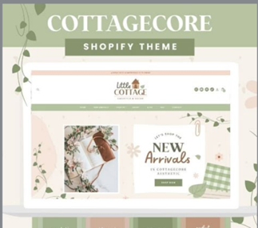 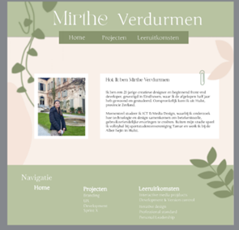Ik was zeer tevreden over deze stijl. Ik vind de stijl mooi (Cottagecore). Ook vind ik het mooi dat het groene eruit springt en het roze meer op de achtergrond blijft en niet veel nadruk. Bij het andere design waarbij ik roze en groen had gebruikt was dit andersom en was ik hier ook niet tevreden meer. Ik wil dat er een nadruk op groen wordt gemaakt. Ik vind het ook heel leuk dat het een beetje speels is met die paperclip en de planten. Daarom heb ik andere versies gemaakt voor andere pagina’s. Dit is het kleurenpallet:
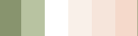Als eerst de project pagina:
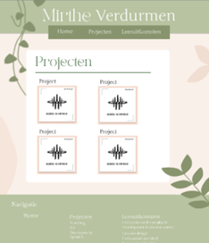 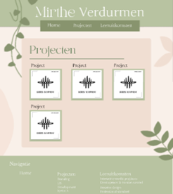 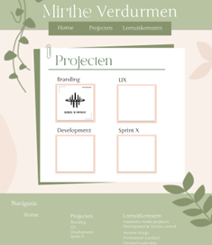 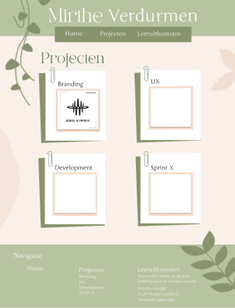Hier ging ik van gewoon een wit vlak naar combineren met roze naar hetzelfde speelse principe met die paperclip en er een soort van boekje van maken. Daarna heb ik er allemaal kleine boekjes van gemaakt.
Vervolgens heb ik er een boekje/mapje van gemaakt. Daarbij heb ik al een basis structuur
gemaakt hoe ik het ongeveer wil gaan maken.
Ook heb ik voor de leeruitkomsten pagina’s gemaakt:
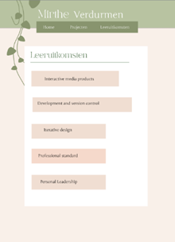 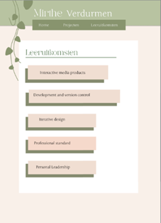 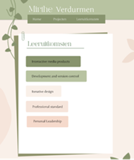 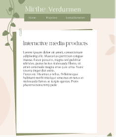Hierboven staan al de designs. Ik ging hier van heel simpel naar die schaduw toevoegen naar een mapje maken en ze onderverdelen in het kleurenpallet voor een mooi overzicht. Vervolgens ging ik kijken hoe zo’n uitwerking eruit zou zien. Ik had hier voor een boekje gekozen met simpele indeling waarbij het wel gewoon tekst is.
Nadat ik deze designs had gemaakt dacht ik dat ik ook een variatie wou maken met kleuren die
ik nooit zou kiezen. Zo heb ik gekozen voor een kleurenpallet van zwart, wit, grijs en oranje.
Bij de eerst heb ik de planten oranje gemaakt zodat die goed opvallen. Bij de tweede heb ik het weggelaten zodat het zo neutraal is. Ik vind het niet mooier dan de ander, maar wel mooi om te zien hoe het eruit ziet met andere kleuren.
Meer iteraties volgen
Development project
In het vervolg op de eerdere opdracht, het ontwerpen van een interactieve UX-ervaring rond de vijf fysieke stations van Cardan. Onze opdracht is het daadwerkelijk bouwen van deze digitale webapplicatie. We vertalen het gemaakte UX-ontwerp naar werkende code.
Orginele designs van Jarvins groep

Feedback van Carolina UX-project
Op auditieve na vond ze het heel leuk dat er een duidelijke opdracht is die de gebruiker moet doen. Bij auditieve zit er geen opdracht aan vast wat het minder sterk maakt en de gebruiker niet goed weet wat ze hier moeten doen. Daarnaast zitten de twee stukjes, opdracht en uitleg heel dicht op elkaar gepropt. Hiermee kan je goed variëren en kijken of het wel echt nodig is. Ook zou een soort van welkom pagina en eindpagina goed zijn om te hebben. Dan komt de gebruiker niet gelijk in de ervaring van een beperking.
Veranderingen na feedback

Toevoeging van een welkomstscherm en afsluitend scherm. Visuele en inhoudelijke herindeling van uitleg en opdracht.
UX test
Nadat we al enkele pagina’s hadden gecodeerd en een klein prototype hadden ontwikkeld, vonden we het een goed moment om een UX-test uit te voeren. Het volledige rapport is hieronder te vinden:
BijlageEindversie
Na het doorvoeren van de aanpassingen hebben we een voorlopige eindversie ontwikkeld, die we vervolgens online hebben gezet op een server.
Link naar Live website: (nog niet beschikbaar)